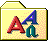

Retro Stuff 
I grew up with the web of the 90s and early 2000s. With Geocities, FTP, Microsoft FrontPage, Netscape Navigator, CuteFTP, Winamp, Napster and personal websites. I often get nostalgic about all that. If you do too, you might enjoy this collection of things from that era.
Built With
The design of this website itself is a tribute to websites of that generation.
Most of the animated GIFs on this site are from  Internet Archive's GIFcities, a searchable repository of animated gifs from old Geocities websites.
Internet Archive's GIFcities, a searchable repository of animated gifs from old Geocities websites.
Every single page is hand-coded and hand-linked (if there you find errors, please  let me know). It's hosted on
let me know). It's hosted on  Neocities, a modern-day Geocities-like web host where you can find and follow lots of other old-school websites.
Neocities, a modern-day Geocities-like web host where you can find and follow lots of other old-school websites.
Websites and Resources
These are websites related to 90s tech and the retro/indie web culture that I think are worth sharing (that were still up last I checked):
 Internet Archvie,
Internet Archvie, - WayBack Machine,
- Windows 98 Icon Viewer,
- Smart Guestbook,
- Neocities Websites,
- Wiby,
- Land of Links,
- oocities - geocities mirror,
- Screenshots from developers & Unix people (2002),
Tools and Utilities
Want to experience the the 90s and early 2000s first-hand? Here are some tools and utilies to get you started:

Winamp skins, Games and Music
This page is under construction. I have a lot more stuff to add and will be doing so over time. Be sure to check back every once in a while. 

Guestbook
Of course this website has a guestbook! 
What do you think about this page? Do you have a 90s thing that you'd like to see added? Or you just have a comment maybe. You can sign my guestbook or you can read what others have written.

 This website is under construction. Last updated: 11 May 2020.
This website is under construction. Last updated: 11 May 2020.- All essays and music on this website are free to copy, share and remix as described in the Free Art License. However, this might not apply to things I've linked to.
 Made in France. All pages handed-coded, like in the old days.
Made in France. All pages handed-coded, like in the old days.- Hosted on Neocities, make the web fun again!
 Best viewed in any browser, including Netscape Navigator, Firefox and lynx.
Best viewed in any browser, including Netscape Navigator, Firefox and lynx.-  The main fonts are Barlow and EB Garamond.